周五 11 月 13 日｜范数、级数、Kronecker 和微积分
今天 205 分钟。 范数和级数 50 分钟，Kronecker 25 分钟，微积分 45 分钟，混合题和短证明 65 分钟，订正 20 分钟。只有 90 分钟时，做跟做 1、3 和混合 F1、F2、F4、F5，最后抄下最容易混的两条条件。
讲义与跟做
跟做 1 2024 青岛 II.7 为什么先判收敛再求逆
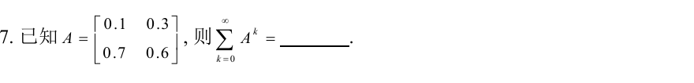
- 看到 ∑k=0∞Ak，先确认可以收敛。 矩阵的诱导 1 范数取最大绝对列和。第一列的和是 0.1+0.7=0.8，第二列是 0.3+0.6=0.9，故 ∥A∥1=0.9<1。这样就可以判收敛。用行和得到 1.3 只能说明这次没法用「行和小于 1」来判。
- 说明为什么出现 I−A。 写有限和 Sn=I+A+⋯+An。左乘 I−A 后中间项抵消，(I−A)Sn=I−An+1。当 An+1→0 时，和是 (I−A)−1。
- 把逆矩阵算出来。 I−A=[0.9−0.7−0.30.4]，行列式 0.9⋅0.4−0.3⋅0.7=0.15。交换对角、把另两项变号，再除以行列式，得到
k=0∑∞Ak=0.151[0.40.70.30.9].
- 辨认同类题。 ρ(A)=maxλ∣λ∣。Ak→0 及几何级数收敛都等价于 ρ(A)<1。某个相应矩阵范数小于 1 是好用的充分条件。例 diag(1,1/2)k→diag(1,0)，幂序列存在极限时仍要区分极限是否为零。一般矩阵序列、级数在有限维可逐元素判。若题目取逆的极限，先核对极限阵可逆。
范数一页记清
| 课件下标 |
手上怎么做 |
| m1 |
所有元素的模相加 |
| m2、Frobenius |
所有元素模平方相加，再开根 |
| m∞ |
对 n 阶方阵，整阵最大元素模乘 n |
| 诱导 1 |
逐列加元素模，取最大列和 |
| 诱导 ∞ |
逐行加元素模，取最大行和 |
| 诱导 2 |
最大奇异值，即 λmax(AHA) |
比如 A=[13−20]，全阵最大的元素模是 3，故 m∞=2⋅3=6。两个绝对行和都是 3，故诱导 ∞ 是 3。相容性表达的是 ∥Ax∥v≤∥A∥∥x∥v，次乘性表达的是 ∥AB∥≤∥A∥∥B∥，证明时先写清你正在证哪一个。
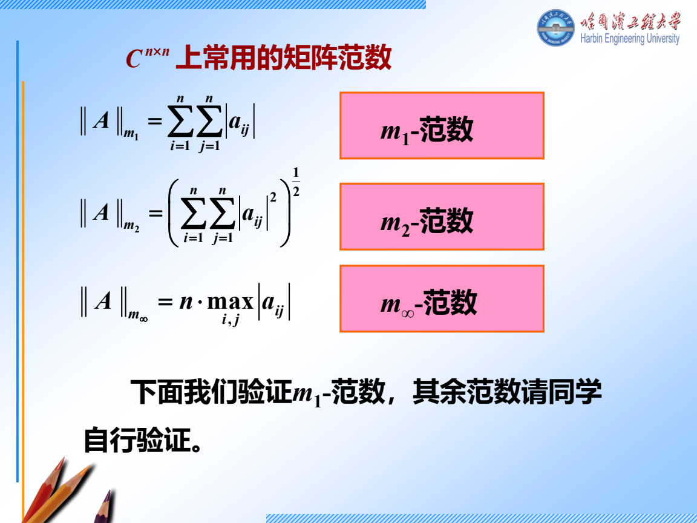
跟做 2 Kronecker 积先标块 再记性质
取 A=[102−1]，B=[3 4] 是 1×2。
- 先按 aijB 作块，第一块行是 [1B2B]，第二块行是 [0B−B]。
- 结果为 A⊗B=[30406−38−4]。尺寸 2⋅1 行、2⋅2 列，和结果相符。
- 这两个因子秩分别是 2、1，所以乘积秩是 2。转置时两边各转置，顺序仍是 AT⊗BT。
- 当 A,B 分别为 m,p 阶方阵，det(A⊗B)=(detA)p(detB)m，指数用另一边的阶数。另有 tr(A⊗B)=tr(A)tr(B)。看到 (A⊗B)(C⊗D) 先检查 AC,BD 的尺寸，再化成 AC⊗BD。
跟做 3 2025 哈尔滨 IV 逐块算矩阵偏导
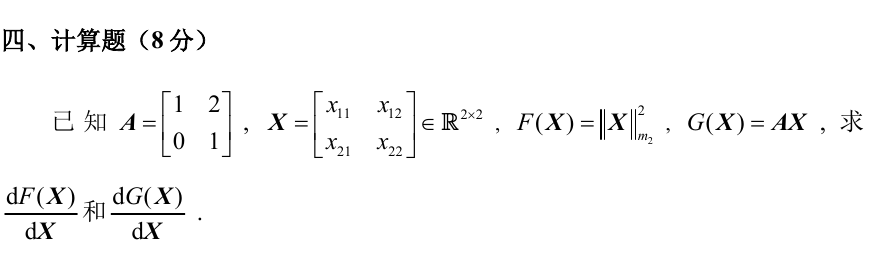
- 先分输出。 F=∥X∥m22=x112+x122+x212+x222 是一个标量。对每个 xij 求偏导，只有对应的平方项留下 2xij。按输入位置排成 dF/dX=2X。
- 对 G=AX，先展开。
AX=[x11+2x21x21x12+2x22x22].
每个变量的偏导仍是 2×2，所以一共四个 2×2 块。
- 逐变量找出现在哪些位置。 对 x11 的块为 [1000]，对 x12 的块为 [0010]，对 x21 的块为 [2100]，对 x22 的块为 [0021]。
- 按照课件的输入位置摆块。 左上是 ∂G/∂x11，右上是 ∂G/∂x12，左下是 ∂G/∂x21，右下是 ∂G/∂x22。因此
dXdG=1021000000001021.
也可用 AEij 核对每一块，其中 Eij 只有 (i,j) 为 1。若题目改成对列堆叠向量的 Jacobian，则按题面另行排。
- 对标量求导时有另一套起手。 A(t) 逐元素求导，形状不变，(A2)′=A′A+AA′。检查是否可交换之后才能合并。逐元素积分也是如此。若 F(x)=∫0g(x)A(t)dt，在被积函数连续的区间用 F′(x)=A(g(x))g′(x)。
展开课件偏导原例与积分原例
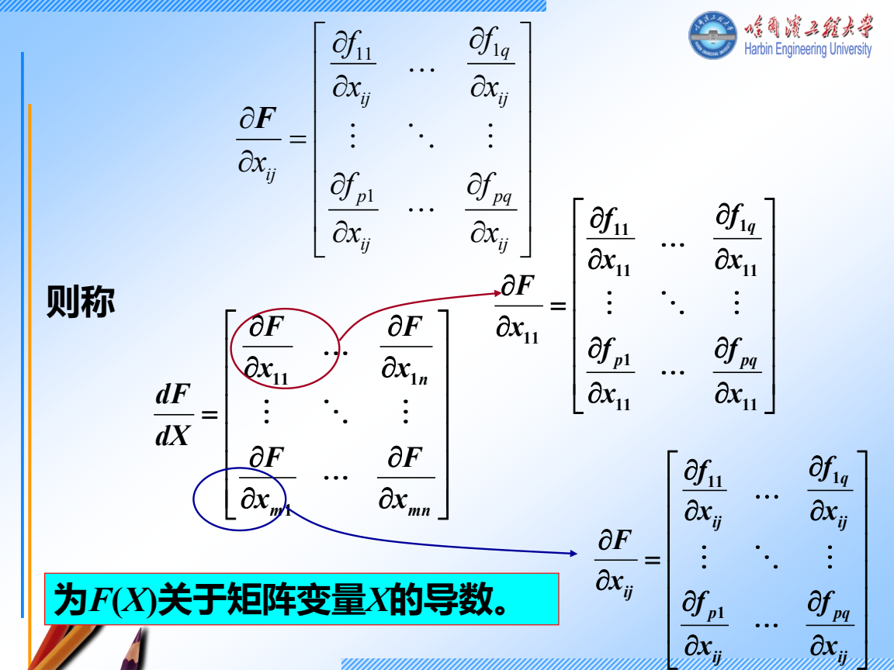
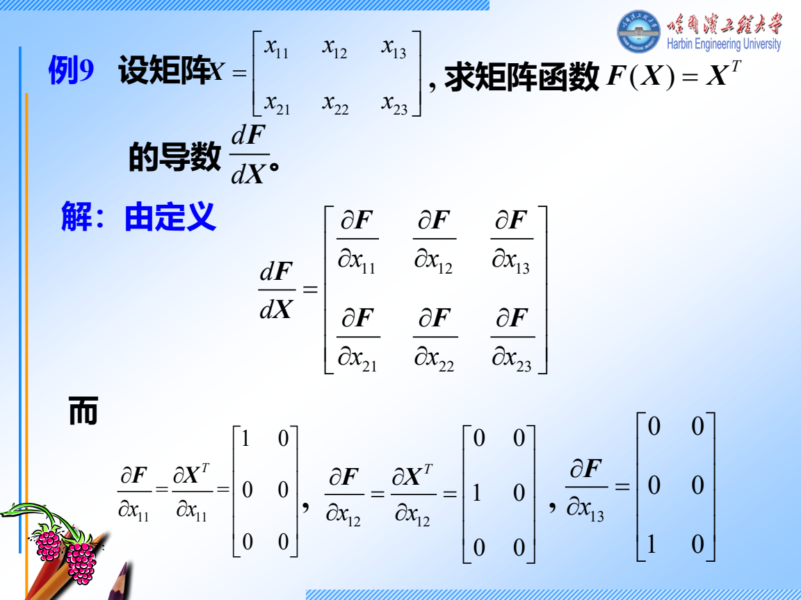
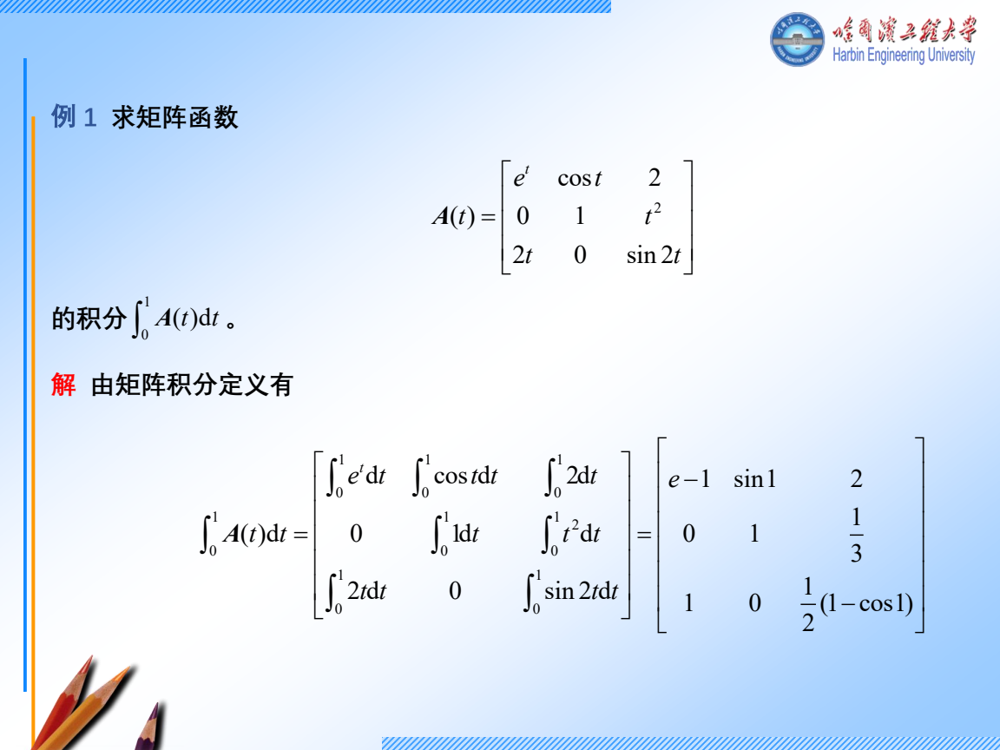
积分原例最后一个积分的订正为 ∫01sin(2t)dt=(1−cos2)/2。
独立练习
前 8 项合计约 30 分钟。先只做题，计一项为一项。F9 另用 12 分钟写完整证明。
F1 2024 哈尔滨 II.4 辨认范数
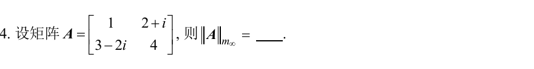
看分步答案
- 元素模依次是 1,5,13,4。
- 最大为 4，题目是二阶方阵的 m∞，所以答案是 2⋅4=8。
F2 2024 青岛 II.8 Kronecker 行列式
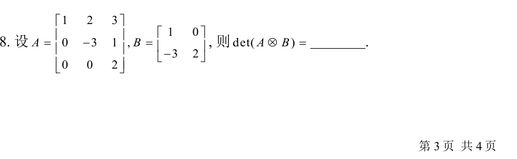
看分步答案
- 两个因子都是三角阵，行列式为 1(−3)2=−6 和 1⋅2=2。
- A 三阶、B 二阶，故 det(A⊗B)=(−6)2⋅23=288。
F3 2024 青岛 II.9 可变上限积分
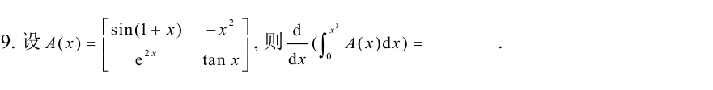
看分步答案
- 先改积分变量为 t，写 dxd∫0x3A(t)dt。
- 积分上限是 x3，先把它代进每个元素，再乘 3x2。在积分有定义且连续的区间内结果为
3x2[sin(1+x3)e2x3−x6tan(x3)].
F4 2024 青岛 II.10 对列向量求导
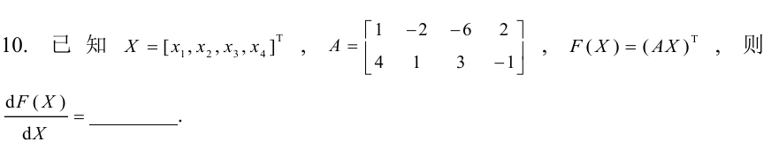
看分步答案
- X 有四行一列，F=(AX)T 是一行两列。对每个 xi 得一个 1×2 的行块。
- xi 的系数来自 A 的第 i 列，转置后成行，依输入次序向下堆。
- 按本课排法，答案 AT=1−2−62413−1，尺寸 4×2。
F5 谱半径和幂级数
令 A=[1/2031/2]。求 ρ(A) 并判断 ∑Ak 是否收敛。若收敛，求其和。
看分步答案
- 三角阵两个特征值均为 1/2，所以 ρ(A)=1/2<1，收敛。诱导行和为 7/2>1 也与此相容。
- I−A=[1/20−31/2]，求逆得 [20122]。
- 上右元素核对 (1/2)⋅12−3⋅2=0，对角均为 1。
F6 乘积求导
令 A(t)=[t010]。求 (A(t)2)′。
看分步答案
- A′=diag(1,0)。A′A=[t010]，AA′=[t000]。
- 相加得 [2t010]。也可先算 A2=[t20t0] 再逐项求导。
F7 2024 哈尔滨 II.6 指数的行列式
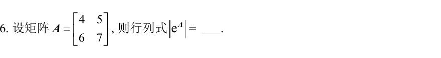
看分步答案
- det(eA)=etrA。因为把 A 化到三角形后，指数矩阵的对角项是原对角项取指数，相乘就得到迹的指数。
- trA=4+7=11，答案 e11。
F8 复习最大块
某矩阵的块为 J2(−1)⊕[−1]⊕[3]。写出特征和最小多项式，并说明 cosA 要匹配哪些数据。
看分步答案
- 特征多项式数总大小，得 (t+1)3(t−3)。最小多项式数每个根的最大块，得 (t+1)2(t−3)。
- 在 −1 匹配 cos(−1) 和 −sin(−1)，在 3 只匹配 cos3。
F9 2023 青岛 III 证明诱导矩阵范数
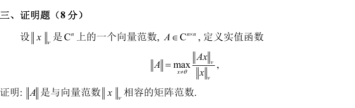
看分步证明
- 将比值改写为 ∥y∥v=1 上的 ∥Ay∥v。有限维单位球面紧且函数连续，最大值存在。
- 所有比值非负。如果最大值为 0，则每个 x=0 都有 Ax=0，所以 A=0。反向直接成立。
- 数乘时分子的范数提出 ∣c∣，故 ∥cA∥=∣c∣∥A∥。
- 固定 x=0，把 ∥(A+B)x∥v≤∥Ax∥v+∥Bx∥v 两边除以 ∥x∥v，各比值由对应的最大值控制，再对左边取最大得到三角不等式。
- 定义直接给出 ∥Ax∥v≤∥A∥∥x∥v，x=0 也成立，故相容。对 ABx 连用两次得 ∥ABx∥v≤∥A∥∥B∥∥x∥v，再除并取最大得到次乘性。
当天验收
F1–F8 达到 6 项正确就记录其余两项的第一处错误。低于 6 项时，优先重做范数下标、乘积求导的顺序和分块导数的排法。睡前收好周六要用的模拟卷，不看参考答案。